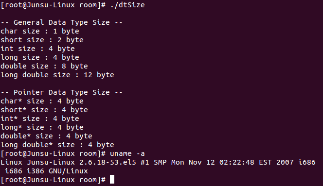
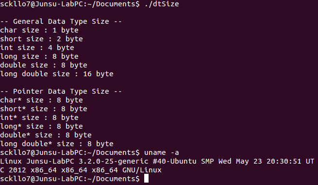

윤성우 님의 열혈 C 프로그래밍 동영상 강좌를 열심히 보고 있다.
자바는 메모리 관리를 안 해도 된다지만 공부하면 할 수록 메모리에 자꾸만 관심이 갔다.
그러한 갈증에 대한 해소를 C언어에서 할 수 있었다.
포인터
메모리 주소의 값을 가지고 있는 변수이다.
주된 용도는 특정 변수의 메모리 주소의 값을 가지고 있는 변수이지만,
아래와 같은 것도 가능하다.
위와 같은 코드는 OS 영역을 건들지도 모르므로 매우 위험하다.
따라서 아래와 같이 써야한다.
|
|
크기
위에서 보듯이 포인터는 실수가 아닌 정수이다.
하지만 그 크기가 1byte인지 2byte인지 어떻게 알 수 있을까?
그 크기는 OS에 의존적이다.
OS를 깔 때 32bit 버전, 64bit 버전의 컴퓨터를 본 적이 있다.
32bit는 OS에서 한 번에 처리할 수 있는 데이터의 양은 32bit, 즉 4byte이다.
왜냐하면 CPU가 처리하는 데이터의 최소 단위인 Register의 크기가 몇 bit인지에서 나오기 때문이다.
또한 한 번에 이동시킬 수 있는 데이터의 양 또한 32bit라고 한다.
데이터 버스를 이용하는 건지 뭔지는 잘 모르겠다.
이는 메인 메모리(RAM, Random Access Memory)의 인식과도 관련이 있다.
참고로 메인 메모리의 주소 체계는 1byte 단위이다.
232Byte = 222Kilobyte = 212Megabyte = 22Gigabyte = 4GB
잠시 다른 이야기, 왜 32비트 컴퓨터를 x86이라고 부를까?
통칭 x86계열의 CPU가 32비트까지 나와있고, 여기서 64비트를 지원하도록 확장된게 x86-64죠. 그래서 x86-64를 줄여서 간단히 x64…
8080 - 8086 - 80186 - 80286 - 80386 - 80486 - 80586 등으로 나가는 인텔의 CPU를 통칭해서 x86이라고 부름
그렇다면 64bit의 경우에는 어떨까?
64bit를 지원하는 CPU에 64bit의 OS가 깔린 경우라는 가정하에…
CPU의 Register의 크기가 64bit라서 한 번에 연산(처리)할 수 있는 데이터의 양은 64bit, 즉 8byte.
한 번에 이동시킬 수 있는 데이터의 양 또한 64bit.
이론 상으로 인식할 수 있는 메인 메모리의 크기는
264Byte = 254Kilobyte = 244Megabyte = 234Gigabyte = 224Terabyte
= 214Petabyte = 24Exabyte = 16EB
참고로 말하자면 int의 크기 또한 OS의 bit에 의존적이지 않다!!
같은 64bit지만 컴파일러에 따라서 int의 크기가 달라지기도 하는 것 같다.
하지만 표준이나 요새 상황은 잘 모르겠다.
엄밀하게는 컴파일러에 따라 int 크기가 다르다…가 답일거 같군요.
http://stackoverflow.com/questions/10197242/what-should-be-the-sizeofint-on-a-64-bit-machine
Sang-Kyu Ahn님C99 표준에 따르면 sizeof(char)=1이란 것만 정해져 있고, char는 최소 8비트 라는 것이 정해져 있습니다(limits.h를 통해). 그 다음부터는 상대적인 크기로만 되어 있죠. 보통은 그래서 char가 8비트이지만, 16비트 char를 쓴다고 해서 표준 위반은 아니죠.
short는 마찬가지 방식으로 16비트 이상이면 되고, int는 기계가 다루는 가장 자연스러운(?) 크기(보통은 CPU레지스터나 데이터 버스 크기에 따르겠죠)면서 최소 16비트, long은 int보다 크거나 같은 크기이면서 32비트, long long은 long보다 크거나 같으면서 최소 64비트…
따라서 64비트 머신이라면 64비트 char, short, int, long, long long 도 표준 위반이 아닙니다.
Hyunsok Oh님
이미지와 소스 코드의 출처는 32bit와 64bit의 C 자료형(Data Type) 크기 차이이다.


포인터 변수 타입에 대한 이해
32bit에서는 포인터 변수의 크기가 4byte, 64bit에서는 포인터 변수의 크기가 8byte다.
포인터의 크기는 OS에 의존적인데 그럼 그 변수의 타입도 OS에 의존적인 타입만 써야하지 않을까…? NO!!
32bit OS에서 놓고 포인터 변수의 크기도 4byte, long의 크기도 4byte이다.
64bit OS에서 놓고 포인터 변수의 크기도 8byte, long의 크기도 8byte이다.
따라서 포인터 변수의 타입은 무조건 long이면 될 것 같다.
그런데 왜 char, short, int, float, double* 요런 놈이 존재하는 걸까…?
그건 포인터를 쓰는 근본적인 목적인 메모리 주소에 대한 접근 때문이다.
위의 예제에서 알 수 있듯이 메모리 주소만으로는 해당 메모리 주소가 가리키는 공간이 어떠한 타입인지
즉 몇 byte를 조작해야 내가 원하는 결과가 나올지, 문자일지 숫자일지 등등을 판단하기 힘들다.
즉 포인터의 타입은 포인터가 가리키는 곳의 타입을 알고 있는 것이지,
포인터의 크기를 알고 있는 아이가 아니다.
포인터의 크기는 신경쓸 필요도 없고 컴파일러가 알아서 처리하는 것 같다.
포인터 변수의 데이터 타입이 달라도 컴파일이 되는 경우도 있지만 추천하지 않는다.
배열
배열은 연속된 메모리 공간에 할당하는 것을 뜻한다.
연속해서 메모리 공간에 할당하는 이유는 두가지가 아닐까 싶다.
- 중간 중간 이빨이 나가지 않아 메모리 단편화가 안 일어나지 않을까?
- 반복문 측면에서 주소값+배열 타입만 하면 되기 때문이지 않을까?
또한 변수를 하나만 선언해도 된다는 장점이 존재한다.
그리고 배열의 이름도 포인터이다.
하지만 포인터와의 차이점이라면 포인터 상수라는 점이다.
C언어에서 배열의 이름은 포인터 상수라고 했기 때문에 아래와 같은 게 불가능하다.
포인터의 덧셈, 뺄셈, 증감 연산자(+, -, ++, –)
포인터에서 포인터 ± n은 다음과 같은 의미를 가진다.
주소값 ± n * sizeof(포인터 변수 타입)
배열의 이름 또한 상수이지만 일단은 포인터이기 때문에 덧셈, 뺄셈 연산자를 사용할 수 있다.